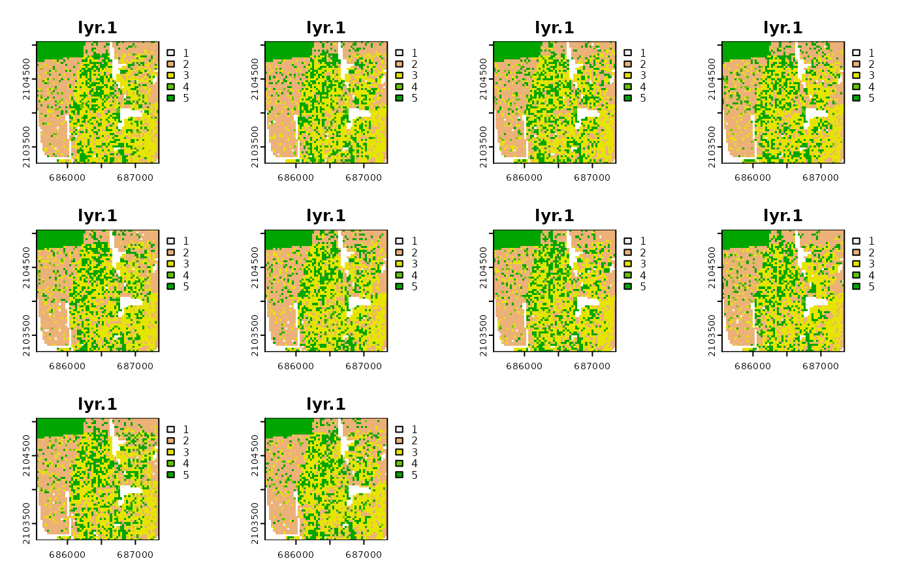

It constructs a high-resolution grid (a racial landscape) in which each cell contains only inhabitants of a single race. Realization is constructed based on race-specific grids. Racial composition at each cell is translated to probabilities of drawing a person of a specific race from a cell. Thus, the race label of a cell is a random variable. To obtain a stochastic realization of racial landscape, we use the cell's race probabilities and a random number generator to randomly assign specific race label to each cell (Monte Carlo procedure).
create_realizations(x, n)
| x | RasterStack with race-specific population densities assign to each cell |
|---|---|
| n | A number of realizations |
A RasterStack object containing n realizations. Single race label in a racial landscape is assigned based on the order of race-specific grids in RasterStack with input data (For example, the race_raster object has five layers named: asian, black, hispanic, other, white. The race labels in racial landscape raster will be 1 - asian, 2- black, 3 - hispanic, 4 - other, 5 - white).
